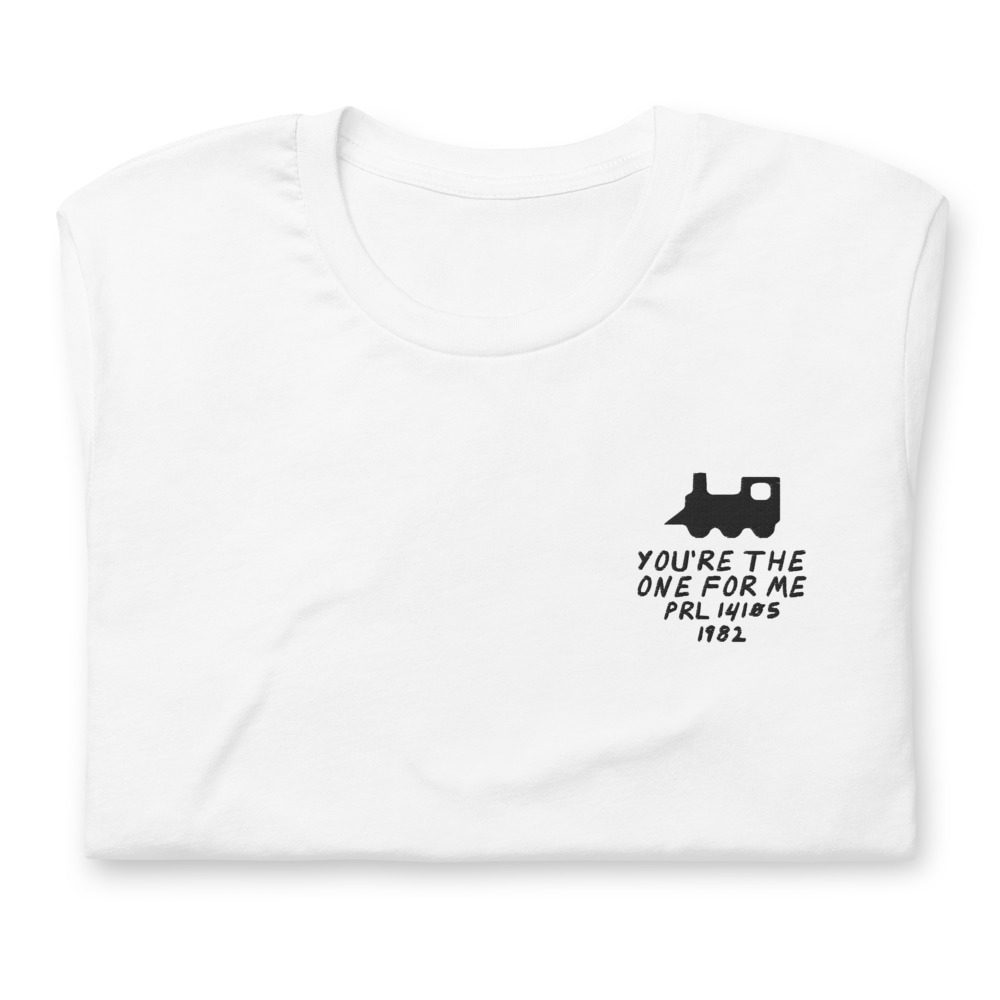
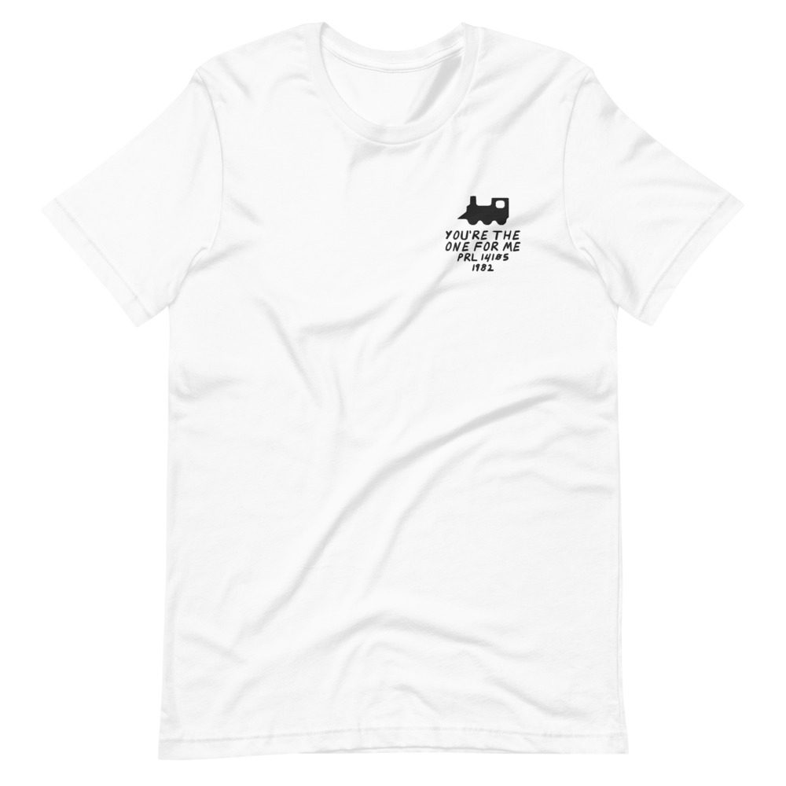

“D” Train – You’re The One For Me
Still in shrink, with the hype sticker.
LP · Prelude PRL 14105 · 1982
Ungraded, checked before it ships
Comes with its own shirt: a white tee embroidered on the chest with its title, catalog number and year in my handwriting. Pick a size at checkout. It’s made for you and ships on its own.


Buy $65
Play a track
Side 1
- You’re The One For Me4:57
- Walk On By5:28
- Tryin’ To Get Over5:26
- Lucky Day4:58
Side 2
- “D” Train (Theme)5:17
- Keep On6:45
- Love Vibrations5:19
- You’re The One For Me (Reprise)3:45
Cello
Jesse Levy, Seymour Barab
Drums
Howard King, Hubert Eaves Jr, IV
Guitar
Edward Moore, Billy “Spaceman” Patterson, Butch Campbell
Harp
Gene Bianco
Keyboards
Hubert Eaves III
Lead Vocals
James “D-Train” Williams
Backing Vocals
James “D-Train” Williams, Neil Trotman, Lisa Fischer
Percussion
Steve Kroon, Hubert Eaves III, Hubert Eaves Jr, IV
Saxophone
Eugene Ghee
Strings
Marilyn Wright, Marvin Morgenstern, Max Ellen, Paul Gershman, Regis Iandiorio
Trombone
Janice Robinson
Trumpet
Earl Gardner, Frank Williams, Kamau Adilifu
Viola
Harry Zaratzian, Julien Barber, Seymour Berman, Theodore Israel
Bass
Kevin Eaves, Basil Fearrington
Produced by Hubert Eaves III